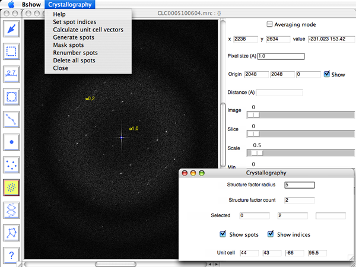
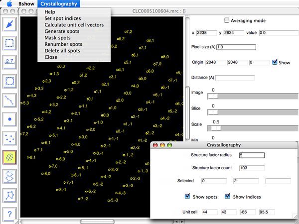
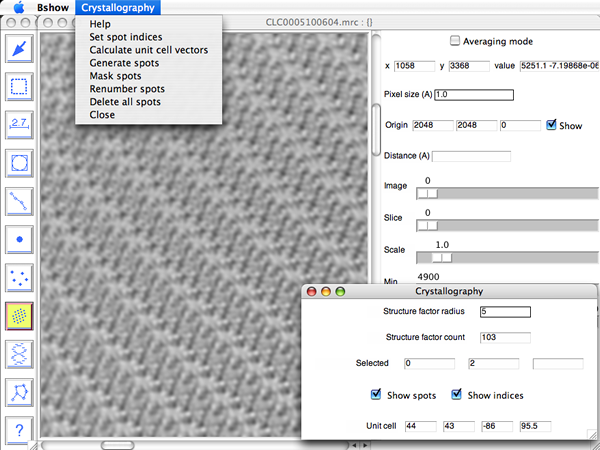

Crystallography
operations are activated by selecting the
"Micrograph/Crystallography" menu item or the Crystallography tool (Dot array icon).
This brings up a new window with a
menu "Crystallography" and parameters:
- Crystallography
- Set spot indices - open a dialog box called "Indices" to set the indices of the currently selected reflection.
- Calculate unit cell vectors - use the available reflections to calculte unit cell parameters.
- Generate spots - generate all reflections within a given resolution limit.
- Mask spots - mask reflections and deletes the background.
- Delete all spots - delete all reflections in memory (no recovery!).
- Close - close window and deactivates crystallographic operations.
- Parameters
- Structure factor radius - sets the radius for drawing circles around reflections and masking.
- Structure factor count - indicates the number of structure factors.
- Selected - indicates the currently selected structure factor indices and its figure-of-merit.
- Radiobuttons to display/hide structure factors and labels.
- Unit cell - vectors for the unit cell.
Setup for crystallography
The image of a crystal is read into bshow, and its Fourier transform calculated with the "Image/Fourier transform" menu item. The Fourier transform is then shifted to center the origin with the menu item, "Image/Center origin".
Structure factors and unit cell parameters
To activate picking reflections, select the crystallography tool icon (dot array) from the tools window. Click on a reflection and then set its indices with the "Crystallography/Set indices" menu item. Repeat this with at least one more reflection. Generate the unit cell vectors using the "Crystallography/Calculate unit cell vectors" menu item. Finally, generate all reflections within a given resolution by selecting the "Crystallography/Generate spots" menu item.

Masking
With the structure factors defined, they can be masked using the "Crystallography/Mask spots" menu item. The "Structure factor radius" in the crystallography window is used to determine the mask radius.

The Fourier transform can then be backtransformed to produce a new filtered image.

Mouse controls for picking reflections
- Left/middle button: create a reflection
- Shift - left/middle button: delete a reflection
Clicking the left or middle mouse button in an empty region on the
image creates a new reflection.
To delete a reflection, hold down the shift key and click the left or
middle
button on the reflection.
Reading and saving crystallographic parameters
The "Micrograph/Read parameters" and "Micrograph/Write parameters" menu items are used to read and write parameter files (usually in the STAR format).